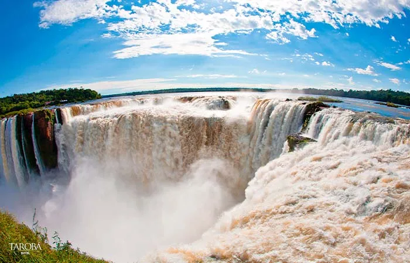

Garganta do Diabo — a queda mais famosa, com 80 metros de altura.
📖 Sobre as Cataratas
As Cataratas do Iguaçu são um conjunto de 275 quedas d'água formadas pelo Rio Iguaçu, na fronteira entre o Brasil (Foz do Iguaçu – PR) e a Argentina. O nome vem do tupi-guarani e significa "água grande".
Números impressionantes
- Altura máxima: 80 metros (Garganta do Diabo)
- Extensão total: 2.700 metros
- Vazão média: 1.500 m³ por segundo
- Número de quedas: 275
Fauna e Flora
Dentro do Parque Nacional do Iguaçu há uma rica biodiversidade de Mata Atlântica:
- 🐆 Onças-pintadas e jaguatiricas
- 🦝 Quatis (muito comuns nas trilhas)
- 🦜 Tucanos, araras e gaviões
- 🦋 Mais de 250 espécies de borboletas
📷 Galeria de Fotos


🎓 Curiosidades
💧 Mais altas que as do Niágara
Enquanto as Cataratas do Iguaçu chegam a 80 metros, as do Niágara têm cerca de 51 metros.
🏆 Patrimônio Mundial da UNESCO
O Parque Nacional do Iguaçu foi declarado Patrimônio Mundial Natural em 1986.
🎬 Cenário de filme de 007
Em 007 – Contra Spectre (2015), cenas foram gravadas nas Cataratas do Iguaçu.
🌈 Arcos-íris quase permanentes
A névoa constante das quedas forma arco-íris que podem ser vistos quase todos os dias.
🗺️ Como Visitar
O acesso pelo lado brasileiro é feito pelo Parque Nacional do Iguaçu, em Foz do Iguaçu. De lá saem ônibus até as trilhas, mirantes e a passarela da Garganta do Diabo.
- 🚶 Trilha das Cataratas (caminhada panorâmica)
- 🛗 Elevador panorâmico
- 🚤 Passeio de barco Macuco Safari
- 🚌 Ônibus do parque com paradas estratégicas